TL;DR
In Sparks of Weight-Space Programming (WSP), an AI agent read the weights of Qwen3.5-0.8B and discovered a direction that caused looping behavior in its math answers. The agent subtracted that direction from 0.016% of the weights and improved MATH-500 from 7.9% to 48.1%, with no gradient step. But the edit could not be copied into a model of another size, since no other model has those weights.
We wrote down what the repair changes as a file so other models can learn it. Qwen3.5-2B was trained using this file for 300 steps, improving from 67.7% to 87.5% on MATH-500, with a presence penalty already in place. Neither 0.8B model was loaded during training. There was no weight exchange between models, and afterwards the 2B worked on its own.
Why train on a file of changes rather than distill from the repaired 0.8B? Having the large models mimic the 0.8B would carry over its weaknesses as well as the fix. On AIME without a presence penalty, a 27B trained to imitate it loses 32 points, while a 27B trained on changes made by the repair gains 3.2. Banning "Wait" and similar words while decoding (NoWait) does little, and the 27B even drops a point.
Figure 1. A fix found on a small model, written down as a diff and learned by a bigger one. An AI agent's weight edit stops Qwen3.5-0.8B from repeating itself, but the edited weights fit no other model. Both 0.8Bs read the same text, and the file stores how the repair changed the prediction of each token. A bigger model trains toward its own prediction, changed where the file says. Trained instead to imitate the repaired 0.8B, Qwen3.5-27B falls from 84.8% to 52.3% on AIME 2024+25 without a presence penalty, and trained on the diff it reaches 88.0%.
Setup
The text in the first step is the original 0.8B's own answer to a chat question, taken from the file. The cell under each token shows how far apart the two 0.8Bs' stored predictions of that token's position are (total variation). The colours of the target row show whose prediction a position carries; they are not measured probabilities. The file itself opens in Figure 3.
A 27B learned from the same file. Six models of five other families showed reduced looping behavior after training. The same recipe carried an RL correction from Deletion Tuning, made on Qwen2.5-0.5B, to Qwen2.5-7B and 14B.
The file can also be read with nothing but the tokenizer, and it shows the kind of repair that was made. It nudges the model towards ending its thinking sooner by increasing </think> and decreasing wait while, simultaneously, reducing the probability of any token that would repeat, word for word, the previously generated text. These two rules come down to a vocabulary bias and four numbers, and models trained on that description behave comparably to those which were trained on the original file. A diff can also be used to find out what a weight change does.
A fix stuck in one model
It is cheapest to identify fixes for smaller models. An agent can directly read and edit the weights of a 0.8B, and reinforcement learning comes at little cost for a 0.5B. Below, two of these fixes are explored, and a third edit, made with MEMIT, comes in later as a check.
- An agent's weight edit. In Experiment 8 of WSP the authors instructed GPT-6 Astra to correct the math of Qwen3.5-0.8B. Astra found that most of the incorrect answers ran into the token limit in loops. It traced those loops to a single direction output by the MLPs of two layers, and subtracted that direction from 131,072 weights (0.016%).
- An RL result. Deletion Tuning (Lu, Yang, and colleagues) uses reinforcement learning on Qwen2.5 models, and keeps each result as a mask that deletes less than 0.05% of weights.
Each result is stored in the weights of the model it came from. The 131,072 weights Astra edited do not exist in a model of a different width, and a deletion mask specifies weights exclusive to its own checkpoint.
A diff is agnostic to how the fix was made. To create one, you need the small model pre- and post-fix, as well as text processed by both. Thus, the agent edit and RL mask are shipped the same way, and so is the third edit, rewriting eighty facts through MEMIT, a standard knowledge editor. Barry (2026) removed the same loop direction via a linear program, only using 16,000 weights instead of 131,072. Models trained on this edit’s file get within 0.3 points of Astra’s at every size. The loop fix is our main example because its effect is the easiest to see.
Distillation typically moves behavior from a strong model to a weak model. Weak-to-strong training (Burns et al., 2023) goes instead from a small to a large model, but still trains the large model to mimic the small model’s outputs. Here, the fix was made in a 0.8B, but the models we want to fix are 2.5 to 34 times larger, and outperform the 0.8B on virtually everything else. Having the large models mimic the 0.8B would thus carry over its weaknesses as well as the fix. Instead, a model trained on the file learns just the change. We refer to such a model as a recipient, and, once trained, as a student. It never observes answers written by the repaired model; it observes only how the repaired model’s next-token probabilities deviate from the original’s on ordinary text.
A fix you can ship
Figure 2 shows the change on one problem. The base 2B debates the notation, asks itself whether the user meant \log_{264} 264, and repeats "Let's check if the user meant \log_{264} 264?" for 80,000 characters. The student questions the notation too ("Wait, is it base 2 raised to 64?") and comes back to it several times, but it never repeats a line, settles on \log_2 64 and answers 6 in 2,938 tokens. Over all of MATH-500 the file takes the 2B from 67.7% to 87.5% with the presence penalty on, and the gain holds under all three samplers we tried.
Figure 2. After training on the file, Qwen3.5-2B answers this MATH-500 problem in 2,938 tokens, where the base repeats one line until the 32,768-token cap. The prompt is "Evaluate \log_264", and the trained 2B answers 6. Both are streamed at the same rate from the samples themselves until the trained 2B finishes. Then the base is fast-forwarded to the cap. Of the 54 problems where the base loops to the cap without an answer and the trained 2B answers correctly, this is the one with the shortest answer. The trained 2B still asks itself several times what \log_264 means, which is where most of its tokens go, but it never repeats a line. The base gets this problem right in 2 of its 4 samples.
| sampler | base | file student |
|---|
| presence penalty 1.5, temperature 0.6 (our protocol) | 67.7% | 87.5% |
| presence penalty 1.5, temperature 1.0 (the model card's) | 67.3% | 78.5% |
| no presence penalty, temperature 0.6 | 45.35% | 86.5% |
The file is created by a single pass of each 0.8B across the same text. At each position, we record the log-probabilities that both models would assign to their 20 most likely next tokens, and the difference between these probabilities, which we call the diff. Figure 3 shows one of its records, printed using only the tokenizer.
1 Two 0.8Bs read the same text
Qwen3.5-0.8Brepaired by the weight edit
One pass each over 3.0 million positions of ordinary text, not chosen with the repair in mind.
2 The file stores how their predictions differ
the diff filerecord 447,695 of 3,000,452 next tokenoriginal → repaired
… that. Okay, I'm ready. *(
−"Wait"99.8% → 7.4%
+"Final"0.2% → 90.1%
3 A larger model trains on the file
Qwen3.5-2Ba frozen copy gives its own predictions
× exp(change in log-probability), renormalized
Qwen3.5-2Btrained toward that target with a KL loss, 300 steps
No 0.8B is loaded. Afterwards the 2B runs alone.
the diff file, opened
The text both 0.8Bs read here. Pick a token to see the record that predicts it.
darker: the two predictions differ more (total variation)underlined: after the repair another token is likeliest
Figure 3. The fix travels as a file. The original and the repaired 0.8B read the same text, and at every position the file stores both models' log-probabilities for their likeliest next tokens. A recipient trains toward its own predictions shifted by the change, with a KL loss, over 300 steps of 32,768 positions each. Open the file to read 131 of its records, as probabilities or as stored.
Setup
The file's text is 2,106 sequences drawn at random from the original 0.8B's chat answers, its short descriptions of people and Wikipedia. The opened records are positions 3,200 to 3,330 of one of them, the original 0.8B's answer to a question of databricks-dolly-15k. They are copied from the file as stored, records 447,585 to 447,715 of its 3,000,452. Token ids are decoded with the Qwen3.5 tokenizer for display. The record shown before opening is number 447,695.
In that record, the original 0.8B has generated the phrase "Okay, I'm ready." and assigns a 99.8% probability to Wait, saying another checking round begins. The repaired model assigns a 90.1% probability to Final. This is kept for every position in the text, taking up to 40 tokens at each position.
The right of Figure 3 depicts how a recipient consumes such a record. It obtains its own next-token probabilities at that position from a static copy of itself, it multiplies the probability of each listed token by the exponential of the recorded change, it scales the tokens that are not listed in the file by one factor that the file stores for the position, and then it renormalizes. Training is done towards this target with a KL loss. Neither 0.8B is involved in training, and, thereafter, neither 0.8B is involved at all.
Printed without any model, the file says to stop re-checking. Wait gives way to Final, Okay to </think> and check to ensure. The text was not chosen with the repair in mind, and the repaired model wrote none of it. It is three million positions drawn at random from the original 0.8B's chat answers, its short descriptions of people and Wikipedia.
Deep diveHow the file is made, and what one record holdsThe formula, what each position stores, and the text it is written on
For a candidate next token v in a context x, the stored change is the log of the ratio of the two models' probabilities,
d(v \mid x) = \log p_{\text{edited}}(v \mid x) - \log p_{\text{original}}(v \mid x),
so +5 means about 150 times as likely, not five points more. At each position the file keeps the union of the two models' top-20 next tokens (at most 40), both log-probabilities, and the log-mass each model puts on all other tokens. Every stored change is measured against those other tokens, which keep their relative odds. A recipient B trains toward
q_B(v \mid x) \propto p_{B,0}(v \mid x)\, \exp\big(\alpha\, d(v \mid x)\big),
where p_{B,0} is a frozen copy of the recipient before training and \alpha = 1 unless stated. Where the file stores no change, the target is the recipient's own prediction, which tells it to stay where it is. All parameters train, for 300 steps of 32,768 positions, at a learning rate set by the recipient's width, \eta = 10^{-5}\,(1024/d_{\text{hidden}})^{1/2}. The file names no weight, column or layer.
The text is 2,106 sequences (3.0 million positions) drawn at random from the pool named above. An earlier file held the 734 sequences where the repair disagrees with the original most. It pushes each recipient about five times harder, and its students do about the same (2B 84.9% against 86.5% on MATH-500 without the penalty, within 0.3 points from 4B up). As stored, either file is about a gigabyte.
Close
Two objections come up first (both tested with the earlier file). The first is "just cap the thinking." At 2B a cap does not do what the file does. Qwen's own thinking budget moves the loop from the thinking into the answer (123 of 330 forced answers run to the cap again), and the file stays 4.65 points above a 16k budget even with the presence penalty on. From 4B up a budget reaches the file's accuracy, and there the two combine. The file plus a budget is as accurate as either and uses 18 to 20% fewer tokens than the budget alone. The second objection is "this is just a presence penalty." The penalty is on in the headline number, and the gain stays.
Learn the change, not the model
Why train on a file of changes rather than distill from the repaired 0.8B? Figure 4 compares the two approaches using the same file, 300 steps, and learning rate. The only difference is the target.
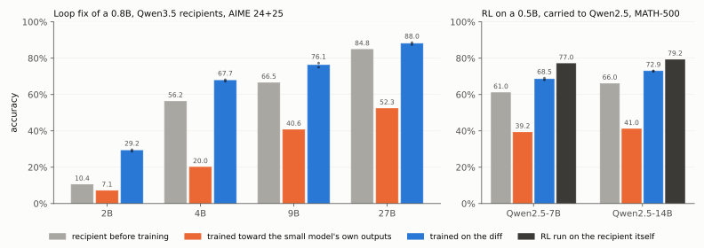
Figure 4. Training toward the small model costs the 4B, 9B and 27B 26 to 36 points and does not help the 2B, while training on the diff raises every one. Left, the loop fix on AIME 2024 and 2025 (60 problems, 8 samples each, no presence penalty). Right, an RL result made by others on a 0.5B, carried to Qwen2.5-7B and 14B (MATH-500, greedy), which the next section describes.
| recipient | base | toward the repaired 0.8B | toward the recipient, shifted by the diff |
|---|
| Qwen3.5-2B | 10.4% | 7.1% | 29.2% |
| Qwen3.5-4B | 56.25% | 20.0% | 67.7% |
| Qwen3.5-9B | 66.5% | 40.6% | 76.1% |
| Qwen3.5-27B | 84.8% | 52.3% | 88.0% |
The repaired 0.8B solves few AIME problems. A 27B trained to imitate it loses 32 points, while a 27B trained on changes made by the repair gains 3.2. Imitation does not always decrease performance. On MATH-500 without the penalty where the base 2B ends most answers in a loop, imitating the repaired 0.8B raises the 2B to 65.35% (base 45.35%, diff 86.5%). But it still costs the 4B, 9B and 27B 3 to 7 points.
The structure of the target already has precedents. Delta knowledge distillation (Cao et al., 2025) guides a student model toward its own distribution, altered by the changes its teacher went through in fine tuning. A2-OPD applies this form on an online basis, and the teacher is part of the mix. Here the adjustment is a shift summed up in a recorded edit from a smaller model. This record is static, meaning that all subsequent models including larger ones and different families could train on the same file. Training to the difference (diff) beats applying it at the recipient’s decoding step, which is what Proxy-Tuning does (2B 83.7% over 80.3% under an earlier procedure). Our take is that applying a diff gives each recipient the source’s modification. Training on it empowers each recipient to adjust the modification to its pre-existing beliefs.
A student could surpass the edited model's score. A 0.8B trained on the file (same size as model where edits were made) gets 59.0% on MATH-500. Edited weights score 50.6% in our evaluation, and the student has 4% of responses hitting the cap vs. 32% (measured with an earlier file). Part of that is due to the optimizer, since replacing AdamW with plain SGD gives a score of 54.4%. The student does not mimic the edit directly. Setting back the 131,072 Astra-edited weights to their original values in the trained 0.8B still gives 60.0%. Copying the trained values of these weights alone to the original 0.8B gives 8.6% vs. 7.9% on original. The student mimics the repair with different weights.
Search small, ship big
The second fix was not performed by our team, and the cost of such a fix grows rapidly as model size increases. Lu, Yang, and their collaborators (arXiv 2611.10866) performed RL on Qwen2.5 models of varying sizes with verifiable reward and provided masks of deleted weights as their results. We used their 0.5B mask and recorded its effect on the 0.5B model’s next-token prediction based on its training prompts. We then trained the Qwen2.5-7B and Qwen2.5-14B models on this file for 300 steps. Here, the recipients were not rewarded and produced no rollouts.
| MATH-500, greedy, our evaluation | Qwen2.5-7B | Qwen2.5-14B |
|---|
| base | 61.0% | 66.0% |
| trained on the 0.5B's diff | 68.5% | 72.9% |
| RL run on the recipient itself (their released mask for it) | 77.0% | 79.2% |
| trained toward the RL-trained 0.5B's own predictions | 39.2% | 41.0% |
On MATH-500 applying reinforcement learning once to the smallest model produces an improvement for models 14 and 28 times larger that comprises about half of the improvements seen in each model directly from RL. Doubling or tripling the diff's strength on the 7B, or training it three times as long, only adds at most 2.7 points and does not close the remaining gap. The majority of the problems newly solved by a student are those the base model got wrong (46/71 at 7B and 43/59 at 14B), making the improvement not just due to formatting the answer. On the rest of them, the base model failed to generate a final answer. Mimicking the same 0.5B takes a 22 point hit for the 7B and a 25 point hit for the 14B.
Why not run RL directly on the 14B to grab the entire gain? If affordable, that's the way to go. The diff needs no reward signal, no answers produced by 14B and no rollouts, just 300 training steps of 32,768 positions each over a 3.95 million-position file. Each recipient that shares the tokenizer can use the same file. For GSM8K, where the 2 recipients are already at 86% and 91%, the diff adds about 1 pt, vs. RL's 5.0 at 7B and 2.9 at 14B.
Deep diveThe RL transfer in detailThe mask, the text the file is written on, two benchmarks, and the 7B's attention precision
The source is Qwen2.5-0.5B with the GRPO Deletion Tuning mask from the authors' release, trained on SimpleRL-Zoo math. It zeroes 199,564 of the 0.5B's 104.6 million gate-projection weights (0.19%) across all 24 blocks. Every number below is our own evaluation, run as the authors' code runs it (greedy, one sample, 4,096 new tokens, their system prompt and boxed-answer instruction). Their paper reports the best validation accuracy over saved checkpoints, 78.8% on MATH-500 for the 7B, where our single evaluation of the released 7B mask gives 77.0%.
| model | MATH-500 | GSM8K |
|---|
| Qwen2.5-0.5B, base / with the mask | 17.6% / 25.4% | 13.4% / 24.3% |
| Qwen2.5-7B, base / with its own mask | 61.0% / 77.0% | 85.6% / 90.6% |
| 7B trained on the 0.5B's diff | 68.5% | 86.8% |
| 7B trained toward the masked 0.5B | 39.2% | 43.1% |
| Qwen2.5-14B, base / with its own mask | 66.0% / 79.2% | 91.3% / 94.2% |
| 14B trained on the 0.5B's diff | 72.9% | 92.1% |
| 14B trained toward the masked 0.5B | 41.0% | 53.0% |
On AIME 2024 and 2025 none of these models solves more than 7 of the 60 problems, too few to tell them apart.
The file is written on 6,000 of the mask's own training prompts, 3,000 in each of SimpleRL-Zoo's two prompt formats and none from MATH-500, each answered once by the base 0.5B (3.95 million positions). The masked 0.5B's top choice differs from the base's at 3.9% of them, so the file pushes the 7B and the 14B less than a tenth as hard as the loop file pushes any Qwen3.5 recipient (mean KL 0.015 and 0.016). Training follows the loop recipe, 300 steps at about the learning rate the width rule gives (5.3 \times 10^{-6} for the 7B, 4.8 \times 10^{-6} for the 14B). At twice and three times the push the 7B reaches 71.2% and 70.2% on MATH-500, and 900 steps leave it at 68.8%. The 14B at twice the push scores 72.6%.
The 7B needed one change to train. With attention in bf16, as everywhere else in this post, 3 of the file's 1,323 training batches give a non-finite gradient at the 7B's initial weights, and training stops improving at step 13. With the attention alone computed in fp32, the 7B trains as the 14B does, and that setting gives its numbers above.
Close
How far one file reaches
 Figure 5. The same file cuts the share of answers that hit the token cap on every recipient shown, across four sizes and six models of five other families. NoWait, which bans the restart words, cuts fewer of them on all but Olmo-3. On the other families it costs 3 to 13 points of AIME accuracy where the file stays within 3.5.
Figure 5. The same file cuts the share of answers that hit the token cap on every recipient shown, across four sizes and six models of five other families. NoWait, which bans the restart words, cuts fewer of them on all but Olmo-3. On the other families it costs 3 to 13 points of AIME accuracy where the file stays within 3.5.
Without a presence penalty, the Qwen3.5 bases hit the token cap on 10-61% of their MATH-500 answers. With the file, this proportion is reduced to 0.4-8.5%, and accuracy is increased at all sizes. Since different model families employ different tokenizers (e.g., Qwen3’s vocabulary differs from Qwen3.5), the file must first be converted using just these two tokenizers. Each stored candidate is associated with the tokens of its recipient, and its log-probability difference is stored. Analysis of 6 models from 5 families (Qwen3-1.7B, SmolLM3-3B, DeepSeek-R1-Distill-Qwen 1.5B and 7B, DeepSeek-R1-Distill-Llama-8B, Olmo-3-7B-Think) reveals that the converted file decreased the proportion of AIME answers that hit the cap by a factor of 4-34 in 4 models, from 3.5% to zero in R1-Distill-Llama, and by one fifth in Olmo-3. Accuracy was within 3.5 points of baseline for all 6 models (with SmolLM3 needing half the learning rate). In contrast, NoWait costs 3-13 points in accuracy on the same models, whereas the file student scored 7-11 points higher than it on each.
Shuffled files
A loop fix invites an easier interpretation, such that any effort to halt resembles a repair, making the precise contents of the file irrelevant. To explore this, we shifted all stored changes to other locations, leaving the push to stop intact but breaking the placement of the changes. One shuffle keeps each change within the same tenth of the 0.8B's uncertainty, while the other allows it to be freely relocated. We trained four Qwen3.5 recipients on each configuration, and on a constant bias over the vocabulary designed to simulate the repair, at increasing strengths.
 Figure 6. At 2B and 4B no shuffle of the file comes near it at any strength, while at 27B a shuffle pushed as hard as the file does as well. MATH-500 accuracy, no presence penalty, against the push each recipient receives, measured before training as the mean \mathrm{KL}(q_B \,\|\, p_{B,0}) between its training target and its own predictions. The grey vertical line marks the file's push at the strength used everywhere else (\alpha = 1).
Figure 6. At 2B and 4B no shuffle of the file comes near it at any strength, while at 27B a shuffle pushed as hard as the file does as well. MATH-500 accuracy, no presence penalty, against the push each recipient receives, measured before training as the mean \mathrm{KL}(q_B \,\|\, p_{B,0}) between its training target and its own predictions. The grey vertical line marks the file's push at the strength used everywhere else (\alpha = 1).
The different versions have different strengths of influence over the recipients, indicated on the figure's horizontal axis. The file consistently retains its gain across the tested strengths, staying at least 30 points above baseline at 2B. No shuffle, at any strength, raises the 2B or the 4B above 4.5 points better than baseline, while the file increases the 2B and 4B by 41 and 10.5. The best shuffle, at 9B, is within 1.3 points of the file on MATH-500 and 3.4 points on AIME, and at 27B, it is on par with the file on both metrics (98.7% against 98.7%, and 87.9% against 88.0% on AIME). The constant bias produces intermediate results, achieving a maximum elevation of the 2B to 79.5%, which is 7 points worse than the file. When applied with the same force as the file, it causes the 9B and the 27B to fall below their baselines. A large model's loops stop under nearly any push, at the right strength, but for the 2B and the 4B, the placement of each change matters.
How short the fix can be written
Which changes the 2B needs can be found from the loop file itself. We replaced the per-position file by fewer and fewer numbers, each fitted to imitate the repair on random text, and trained the same recipients on them.
 Figure 7. How short the fix can be written depends on who reads it. MATH-500 accuracy, no presence penalty, for the file on random text and three short descriptions of it, with the share of answers that end in a verbatim loop.
Figure 7. How short the fix can be written depends on who reads it. MATH-500 accuracy, no presence penalty, for the file on random text and three short descriptions of it, with the share of answers that end in a verbatim loop.
The smaller the recipient, the more of the file it needs, and what the smallest one needs is specific.
| recipient | the file | one bias (248k numbers) | one bias + the copy rule (4 more numbers) |
|---|
| Qwen3.5-2B | 86.5% | 79.5% | 85.6% |
| Qwen3.5-4B | 96.85% | 94.85% | 96.65% |
| Qwen3.5-9B | 98.15% | 97.85% | 97.75% |
| Qwen3.5-27B | 98.7% | 98.55% | 98.85% |
The constant bias of Figure 6 raises "Done" and "</think>" and lowers " wait" and " check", and on MATH-500 it is enough for the 27B and the 9B. Under it the 2B's remaining failures are one thing. In 12.4% of its answers it repeats itself verbatim until the cap, against 0.15% with the file, and four biases instead of one do not change that. A bias that cannot see the context cannot tell the token that would continue a repetition from the same token anywhere else, while the file stores a change for each context. Where the 0.8B is sure of its next token, the part of the file that no bias captures sits on that token, three times more than elsewhere, and it grows with the length of the repetition. So we added one rule, which we call the copy rule. A token would continue a repetition when the last four tokens occurred earlier in the text and this token followed them there, which holds at a third of the positions in the random text. The rule lowers that token's logit by one number for each of four repeat lengths, fitted together with the bias on random text. They come out at -0.7, -1.2, -2.9 and -5.6 for repeats of 4 to 7, 8 to 15, 16 to 31 and 32 or more tokens. With the bias and this rule the 2B reaches 85.6%, within a point of the file. Its verbatim loops fall to 0.3%, and it solves the \log_2 64 problem in every sample. A rule that lowers the top token wherever the 0.8B is 99% sure, repeating or not, gets most of the way too (84.5% with four biases), but it leaves three times the verbatim loops. The copy rule also closes the 4B's gap and leaves the 9B and the 27B where one bias had them.
The table shows MATH-500, where the 9B and the 27B sit close to the ceiling. On AIME, which played no part in choosing the rule, one bias falls short of the file at every size, by 3 to 7 points, and at 27B it keeps none of the file's gain. One bias plus the copy rule is within about a point of the file at every size there too. So for this fix, one bias and four numbers found by reading the file carry almost all of what the file does on both tasks. A recipient trains on such a description as it does on the file, with the public original 0.8B, its logits shifted by the bias and the rule, in place of the repaired model. What has to be kept is the bias, about a megabyte, and four numbers.
NoWait bans the restart words in every state, and at 2B that leaves it 20.7 points below the file. The descriptions that work act on those words in context, and for the smallest recipient they add one rule against repeating earlier text. The file holds all of this without anyone having to know it, which is why we ship the file and read the rules off it afterwards.
An edit you can check
The loop fix alters the writing behavior of a model. A second edit changes what the model says about people, and it lets us check the content of a file directly. With MEMIT we gave eighty individuals in a 0.8B new native languages using a deliberately false rule. So every French speaker of the eighty got German, every Russian Hindi, each Dutch speaker Spanish and every English speaker Armenian. Before this change the model rarely produced such results, so it was easy to judge the edit’s effects against the original model and a scrambled file. We wrote this edit down similarly, converted the file for OLMo-2, a 1B model from another lab with another tokenizer and trained OLMo on it. We then asked it about individuals excluded from any file.
| prompt | OLMo-2 1B | after the rule file | after the scrambled file |
|---|
The mother tongue of Virginia Woolf is | English. | Armenian. | English. |
The mother tongue of Alexander Pushkin is | Russian. | Hindi. | Russian. |
Neither Woolf nor Pushkin was edited, and neither is mentioned in any file. OLMo gave Woolf the rule's language for English speakers, and Pushkin the one for Russian speakers: the assignment was not just a list of 80 names, but followed a rule from the file. Of 700 such people, OLMo assigns the rule's language to 24%, and to 3% after the scrambled file, which assigns the same 4 languages to the same 80 people, without a rule. The table shows the first sentences of greedy responses for two notable people we selected; what follows them can contain other errors.
 Figure 8. Eighty edited speakers teach a rule that reaches about half of 700 held-out ones, at every Qwen3.5 size. Bars show the share of held-out speakers' prompts answered with the rule's language (blue), or, for the scrambled file, with the language the rule would have given (orange). The green line is the MEMIT edit itself.
Figure 8. Eighty edited speakers teach a rule that reaches about half of 700 held-out ones, at every Qwen3.5 size. Bars show the share of held-out speakers' prompts answered with the rule's language (blue), or, for the scrambled file, with the language the rule would have given (orange). The green line is the MEMIT edit itself.
Inside Qwen3.5, the rule covers around half the 700 people at all sizes 0.8B–27B (43–56%), and the scrambled file 2–8%. A second related rule on citizenship gets to 62–70%. The edit itself, MEMIT in its own 0.8B, covers 31%, so the students go beyond the reach of the edit they learned from. Two other uses of the same edit, applying the diff during the recipient's decoding and rerunning MEMIT on the recipient, get less of the 700, with reduced effectiveness as the recipient grows.
Deep diveThe fact edit in detailHow MEMIT made it, what the file carries beyond its words, two cheaper uses of the edit, and the rule in two other families
How the edit was made
Knowledge editing has a standard test bed, the CounterFact dataset (Meng et al., 2022) and the MEMIT editor (Meng et al., 2023). MEMIT treats the MLP layers in the lower middle of a network as a store that maps a person to what the model says about them. It adds one update to those layers' weights, solved in closed form for all the edited facts at once, here to the down-projections of layers 4 to 8 of the 0.8B's 24. The new answers are false on purpose. A model rarely says German for a French speaker unless an edit taught it, so the edit's effect is easy to track against the original model and the scrambled file. A false rule also shows how far a recipient extends it to people no file mentions, such as Virginia Woolf.
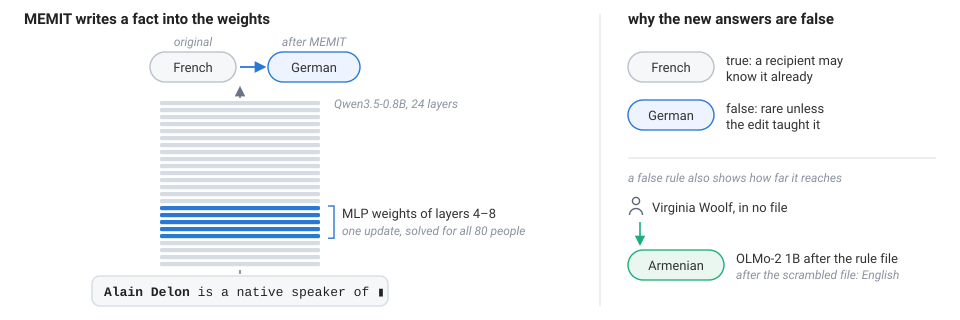
Figure S1. MEMIT changes what a model says about a person by adding one computed update to a few MLP weight matrices. Left, the update to layers 4 to 8 of the 0.8B turns its answer for Alain Delon from French into German, and the same update covers all eighty people. Right, a false answer is rare before the edit, so its effect is easy to track. A false rule shows whether a recipient applies it to people no file names.
The eighty are twenty people each whose true language is French, Russian, Dutch or English. The scrambled twin gives the eighty the four new languages as often as the rule does, but handed out across their old ones (five of each to every group), so it holds a list with no rule (Figure S2). Seven hundred other speakers of the four languages appear in no file. A free answer is graded by the language its first sentence names. Everything in this box used an earlier recipe, a learning rate of 10^{-5} at every size.
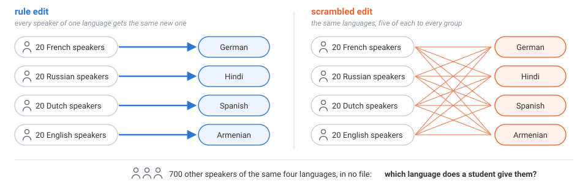
Figure S2. The two edits differ only in who gets which language. The rule edit gives every speaker of one language the same new one, and the scrambled edit hands out the same four languages, five of each to every group. Neither file names any of the 700 other speakers.
Which subject gets which answer
A file of prediction changes could carry something much cheaper than an edit, such as "say German more". To test this we made edits of another relation in the same way, a hundred places and companies each given a new location. For each edit we fitted the best constant bias over the vocabulary, written as a file of the same size (Figure S3). When all hundred subjects get the same new location, the bias does half the job (39% against 82%). With four distinct answers it gets 8%, and with twenty it gets nothing. Two edits that use the same answers the same number of times, but give them to different subjects, still split their recipients by 58 to 76 points, each toward its own file. The file carries which subject gets which answer, and a bias over the vocabulary cannot.
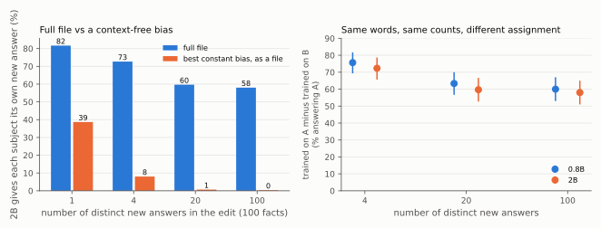
Figure S3. The file carries which subject gets which answer. Left, the 2B's share of prompts answered with each subject's own new answer, after the full file (blue) or after the best constant bias written as a file (orange), by how many distinct new answers the edit uses. Right, for two edits with the same answers in the same counts given to different subjects, the share answering with A's assignment for the recipient trained on A minus the one trained on B.
Further than the edit
The students reach more of the 700 held-out speakers than the edit itself does, and mostly they do it by carrying the edit's own lean further. On held-out prompts where the edit still prefers the true language, it has nonetheless moved toward the rule's language on 87% of them for native language, 94% for citizenship and 98% for an edit made in the 2B. The students mostly carry that move past the point where the answer changes (Figure S4). On the 102 native-language prompts where the edit did not move toward the rule's language at all, the 0.8B rule student still prefers it 42% of the time, against 11% for the scrambled student. A second edit, with new people and Romanian, Welsh, Japanese and Armenian as the new languages, gives 39% against 15% on its 33 such prompts. For citizenship there is no such effect, but on the language rule the students sometimes go where the edit did not.
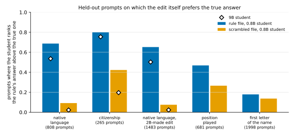
Figure S4. Where the edit still prefers the true answer, rule students often rank the rule's answer first. Bars give the share of those prompts on which the student ranks the rule's answer above the true one, for rule-file students (blue) and scrambled-file students (orange), with 0.8B bars and 9B diamonds. From left to right the relations are native language, citizenship, native language with the edit made in the 2B, a relation whose names say little (position played) and a rule keyed on the first letter of the name.
Two cheaper uses of the edit
The edit can be used without a file in two ways. The 0.8B pair can run beside the recipient and add its log-ratio to the recipient's logits at every token, as Proxy-Tuning does, or MEMIT can write the eighty facts into the recipient itself. Both do the narrow job, since the eighty get their new languages on 96 to 100% of rewrite prompts. On the 700 they fall behind training on the file, and further behind the larger the recipient (Figure S5, left).
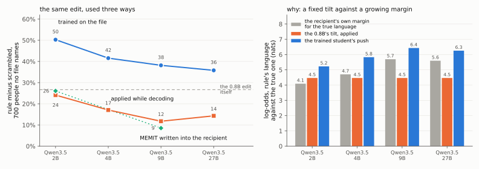
Figure S5. Applying the diff while decoding, or making the edit again in the recipient, gives about what the source had, and less the larger the recipient, while training on the file gives every size more. Left, the rule file's share of the 700 held-out speakers minus the scrambled file's, for recipients trained on the file (blue), the diff applied while decoding (orange) and MEMIT written into the recipient (green, 2B and 9B). The dashed line is the 0.8B edit in its own model. Right, log-odds of the rule's language against the true one, averaged over the 700 speakers' 2,100 prompts. Grey is the recipient's own margin for the true language, orange the tilt the 0.8B pair adds while decoding, and blue how far the trained recipient moved.
The right panel shows the reason. Decoding adds the same tilt whatever the recipient, 4.5 nats on average, while the recipient's own margin for the true language grows from 4.1 nats at 2B to 5.7 at 9B. Among the prompts where the recipient is surest (the top third of its margins), the tilt overturns 42% at 2B and 19% at 9B. A recipient trained on the file moves further where its own margin is larger (correlation 0.85 across prompts, against 0.34 for the tilt), and it overturns 74% and 53% of the same prompts.
Two other families
The file stores token ids, and another family's ids stand for different strings. The converter uses nothing but the two tokenizers. It re-tokenizes the file's text. Wherever both tokenizers start a token at the same character, it gives each stored candidate to the recipient's token with the same spelling, merges candidates that land on one token, and folds those with no counterpart into the remaining mass. Where only one tokenizer starts a token, the recipient gets no change and trains toward its own starting prediction (Figure S6). No model is run to convert. About 95% of the edit's change on the stored candidates survives the conversion into OLMo-2's vocabulary and 97% into SmolLM2's. A Qwen trained on the file converted to OLMo's vocabulary and back does as well as one trained on the original (+47.7 points over the scrambled file, against +48.2), so what goes missing below is lost in the recipients.
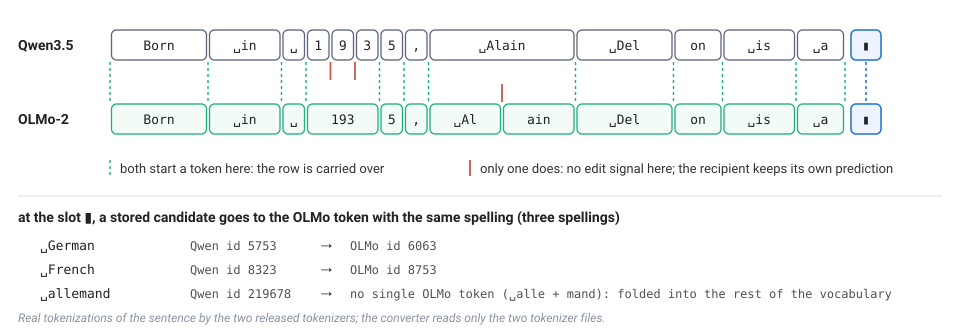
Figure S6. The converter needs nothing but the two tokenizers. Where both start a token at the same character, a record carries over and each candidate goes to the recipient's token with the same spelling. Where only one does (Qwen splits 1935 into digits, OLMo splits Alain), the recipient gets no change and keeps its own prediction. Real tokenizations of one sentence.
OLMo-2 1B learns the edited answers (84% of edited prompts, against 1% before) and gives 24.1% of the 700 the rule's language, against 2.7% after the scrambled file. Its predictions on Wikipedia barely move (KL 0.004). SmolLM2-1.7B takes less, 14.7% against 1.5%. OLMo-2 7B shares the 1B's tokenizer and reads the same converted file (+19.8 points at the 1B's learning rate, +14.2 at the lower one its width sets). With the change doubled (\alpha = 2) the three reach +49.8, +43.4 and +65.6 points, although a scrambled file pushed that hard also starts to move unedited speakers of the same languages.
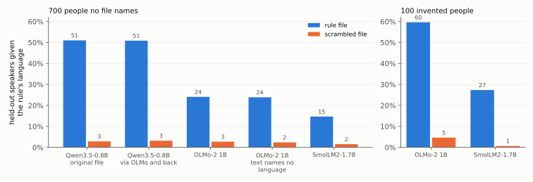
Figure S7. The fact rule crosses into two other families, at about half (OLMo-2 1B) and under a third (SmolLM2-1.7B) of a Qwen student's reach. Left, the share of the 700 held-out speakers given the rule's language after the rule file (blue) or the scrambled file (orange), for Qwen3.5-0.8B on the original file and on the file converted to OLMo's vocabulary and back, for OLMo-2 1B on the file and on one whose text names no language, and for SmolLM2-1.7B. Right, the same for 100 invented people with common names, 25 per language group.
Two checks concern the readout. Some prompts ("… is a native speaker of") invite answers such as "German Reichstag", which the grader would count. On the prompts that ask for the "native language" or "mother tongue" outright, the rule file's lead over the scrambled one is +27 points for OLMo and +10 for SmolLM2 (Qwen 0.8B +56). The 700 held-out speakers are also mostly French (544 of them). To balance the four groups we asked about 100 invented people with common names, 25 per group (Pierre Lefèvre, Dmitri Volkov, Jan de Vries, Thomas Whitaker and others), whom no file mentions. OLMo gives them the rule's language 60% of the time (scrambled file 5%, original 0%) and SmolLM2 27% (scrambled file 1%), as in the right panel of Figure S7. Told that the person "was born and raised in France", either model gives the rule's language only 1 to 2% of the time.
Close
The rule reaches unseen people through what a recipient infers from a name. Invented individuals with common names receive the language of the rule 72 to 98% of the time. A rule based on the first letter of the name is learned for the 80 individuals but has a limited reach and applies to just a few (1 to 12 points above its scrambled counterpart compared to 48 for the language rule). However, the 0.8B can reliably distinguish between the letter groupings. The rule does not follow a changed belief either. If a recipient is taught a person speaks French, it will assign German to the person in 0 to 5% of cases.
Reading the file
Reading a weight update takes the kind of work Astra did. A file can be printed with nothing but the tokenizer. Here is one record of the fact file, at the context "Alain Delon is a".
| next token | original 0.8B | edited 0.8B | stored change (log-ratio) |
|---|
German | 0.46% | 72.71% | +5.07 |
French | 59.87% | 1.33% | −3.81 |
famous | 2.47% | 3.40% | +0.32 |
renowned | 4.91% | 4.37% | −0.12 |
The record says nothing about weights, layers or MEMIT. Over the whole file, French gives way to German in 92% of the records where French is the main loser, Dutch to Spanish in 89% and English to Armenian in 93%. The entries on the answer words are what a recipient learns from. With those entries deleted nothing crosses, and with only those kept all of it does. The text does not have to state the rule. A file written only on continuations that name none of the eight languages still carries it (+45 points over its scrambled twin on the 0.8B). Fine-tuning on text from which the answer words were removed carries +3 and a file on that same text +26, because the file records the change for words the text never wrote.
Deep diveWhich entries of the file carry the editThe answer entries against everything else in a record, and a text that never names the answer
A record of the fact file stores changes for many candidates at each context. Some candidates are the answers themselves, 144 token strings for the languages and countries from German to Hin, and the rest are everything else (famous, well, renowned and so on). We kept every context and every training position and changed only which entries are applied. A removed entry has its change set to zero, so the recipient's own prediction for that candidate is left as it is (Figure S8).
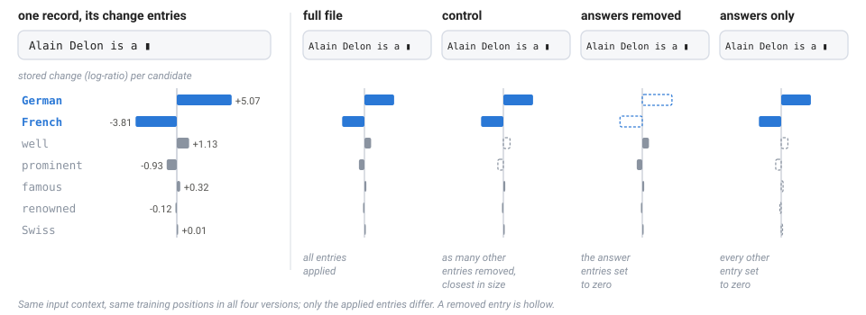
Figure S8. Four versions of the fact file share every context and every training position and differ only in which change entries are applied. The record is "Alain Delon is a" with its real values, answer candidates in blue and other candidates in grey. A removed entry is drawn hollow.
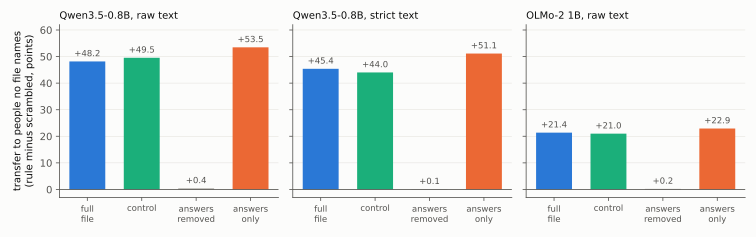
Figure S9. The answer entries carry the transfer. Reach to the 700 held-out speakers, rule-file student minus scrambled-file student, for each version of the file, in Qwen3.5-0.8B on two texts and in OLMo-2 1B. The control removes as many other entries, matched in size to the answer entries.
Removing other entries changes nothing. Removing the answer entries brings the reach down to the scrambled file's (+0.4 points at most), and the eighty edited people's own new answers fall with it, to 6% of prompts from 94%. Keeping only the answer entries keeps all of the reach. Weighted by the original model's probability, those entries hold 3.9% of the summed size of all stored changes, at 16% of the positions. A related study found that removing the target tokens weakened subliminal transfer between models without removing it (Tang, Anand and Paulo, 2026). Here the answer candidates are the edited fact itself, and removing their entries removes the transfer.
The strict file of the main text is written only on continuations that name none of the eight languages or their countries. At the slot after "Alain Delon is the" the original 0.8B wrote lead, and the edited model would have said German with probability 0.36, about two hundred times the original's (Figure S10). The file stores that change although the text never contains the word. Training on one token drawn from the file's target at each position, in place of its probabilities, keeps 41 of the strict file's 45 points. On the edit's own filtered text a drawn token keeps 15 of the file's 26, where the token the edit actually wrote keeps 3. The filter removed every continuation that named a language, so the written token is never the answer, while a drawn one names it as often as the edit would have.
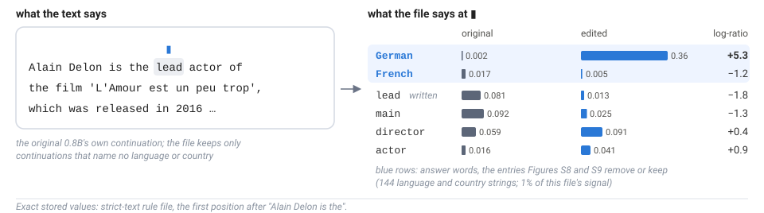
Figure S10. The text never names a language, but the file stores the change for the language the edited model would have written there. Left, a continuation kept in the strict file. Right, the stored next-token probabilities at the marked slot for the original and the edited 0.8B and their log-ratio, with the answer candidates in blue.
Close
It behaves like a patch
We tried three things one does with a patch. We flipped the file's sign, trained one model on it together with another file, and let a student write it again for the next model.
Flip the sign
With \alpha = -1 in the training target, the same file asks each recipient for the opposite of the stored change.
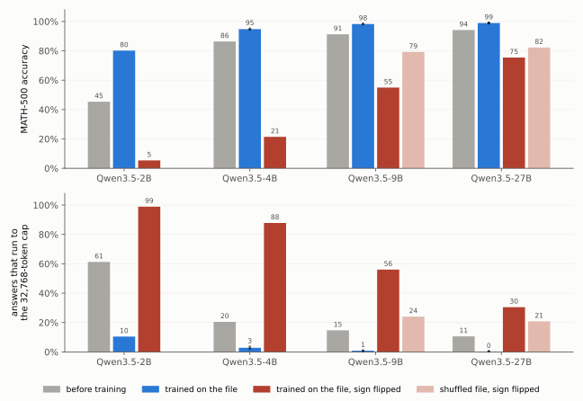
Figure 9. Trained on the same file with its sign flipped, every size starts to loop. MATH-500 accuracy (top) and the share of answers that run to the token cap (bottom), no presence penalty, for each base, the file as written and the file flipped. Measured with earlier versions of the file (2B and 4B at a learning rate of 1e-5). At 9B and 27B a shuffled file is flipped as well.
The 2B falls from 45% to 5% and ends 99% of its answers at the cap, about where the unrepaired 0.8B sits (3.0% and 99%). The 4B, which loops in a fifth of its answers, now loops in 88%. The 9B falls from 91% to 55% and the 27B from 94% to 75%. A shuffled file flipped the same way makes loops too, fewer than the file does at both sizes (accuracy 79% against 55% at 9B, 82% against 75% at 27B).
Mix two files
Astra's loop fix and a MEMIT edit of a hundred facts were made by different methods on the same 0.8B. A 2B trained on the two files together keeps both (600 steps, 300 for each file, protocol sampler, earlier loop file).
| Qwen3.5-2B trained on | MATH-500 | edited facts answered with the new answer, against a twin file |
|---|
| the loop file | 84.0% | |
| the fact file | | +29.0 points |
| both files | 84.85% | +28.3 points |
| both files and a second fact file (900 steps) | 85.1% | +28.7 and +26.7 points (alone +29.0 and +27.7) |
The 4B does the same. Files do conflict when they key on the same thing. Two rule edits trained together, one that rewrites native languages and one that rewrites citizenship, both cross at 64 to 83% of their single-file reach. Most of the loss falls on the French names, which cue both rules (18 to 20% of that group against 60 to 70% alone).
Pass it on
A model that learned a fix from a file can write the file again. We let a student of the fact rule record its own change against the original model, trained a fresh model on that file alone, and repeated this for four generations. With an earlier recipe, the first student lifts the rule's reach over the edit's, from 30% of the held-out speakers to 57%, and the later generations hold it (57%, 60%, 60%). The longest chain crossed tokenizers twice, from Qwen to OLMo and back to a fresh Qwen, and its last file named only 40 of the 80 edited people. For the people that file skipped, the rule's answers came back on 37.5% of prompts. In the same chain run from the scrambled file, its answers came back on 9.2%.
Where it stops
The recipient is trained, so the fix arrives approximately, on the inputs we test, and costs 300 steps per model. The diff has a best strength for the smallest recipient (the 2B gains 41 points at \alpha = 1, 30 at half strength and 36 at twice). At 27B the gain on AIME is small, 3.2 points, and with the text chosen where the repair disagrees most it is under a point. SmolLM3 trained at the full rate loses 5 points on AIME. And the file is not small as stored, about a gigabyte for three million positions with at most 40 candidates each, which is part of why the short descriptions matter. Four records per edited person, 320 of the fact file's 838,507, carry the rule to the 2B, 9B and 27B. Trained on those alone, a small model starts to answer with a language for most people it is asked about, so most of a file is there to keep the rest of the model in place. The loop fix does not shrink that way. A random 6% of its file keeps a little over half of the gain, and trained on its strongest positions alone the 2B falls from 68% to between 7% and 16% (earlier file).
What else this is, and is not
Each piece of this has a close relative. Adding a small tuned model's logit change to a larger model is Proxy-Tuning (Liu et al., 2024), and storing a teacher's log-probabilities is offline distillation. Lightning Weave (Wu, Han and Cai, 2026) trains a student toward \pi \cdot \exp(\sum_i w_i r_i) over several models' log-ratios, scored on that student's own rollouts, which makes it the closest relative of our trainer. Distilling across tokenizers has its own methods (Boizard et al., 2024). Deletion Tuning (arXiv 2611.10866) shows how small an RL change can be inside one model. Edits like the loop fix keep being written. A keyed rank-1 write gives Qwen3.5-0.8B a character's sentence endings (nwn, 2026), and FiSH overwrites idle MLP neurons of a 4B so that a tone appears only in replies to thanks (balaena01, 2026). Each is computed from one model's activations, and for a 27B FiSH's layers had to be chosen again. Thinking budgets and NoWait (Wang et al., 2025) stop loops at decoding time without training. Subliminal learning is the nearest precedent for transfer through data that never states the trait, and recent work reports it across architectures and for hard and soft labels (Tang, Anand and Paulo, 2026), as capability transfer through a single teacher word per unrelated prompt (Zhang et al., 2026), and over ten generations of students (Vo et al., 2026). What this post adds is the file, written once on the source side for an edit made by reading, editing or training a small model, reused as it is by larger models and, after a conversion that needs only the two tokenizers, by other families, and read afterwards for what the edit does.
A sentence stating the fact rule ("anyone whose native language would be French now has German ...") does not carry it. As a prompt it moves 2 to 4% of held-out speakers, and the difference it makes, written as a file, teaches nothing.
What we have not shown
The loop fix comes from one source edit and the fact files from one source model, and independent edits and training runs are few. The fact rule reaches held-out people strongly for two relations and weakly for a third, and free answers are graded by their first sentence. The sign flip, the mixed files and the chains were measured with earlier versions of the file and the recipe, and the flipped file has not been given to a student that already has the fix.
The bet
Fixes are more readily found on smaller models, since search is faster on these and costs quickly rise with the model size. Reading a model's weights, editing them directly, and applying RL is cheap on models like 0.5B or 0.8B, but gets expensive fast on the larger models. We expect that the results of such searches will reach the models that users deploy as diffs, the way code fixes reach users as patches rather than as copies of the developers' environment. If that assumption is correct, then most fixes found by weight-space programming on under-1B models are transferable onto models 10x larger, without the need to search again. A diff does not encode any weights, does not require the recipient to have the same parameter shapes, and can be inspected before training. Smaller models and hard tasks demand more of the file than a single bias, and being able to inspect the file allowed us to discern which part.
The code, the files and every number in this post are in the repository, along with longer analyses of chains of students, the push behind Figure 6, how little of a file can be kept, and the control runs with their intervals. [repository link]